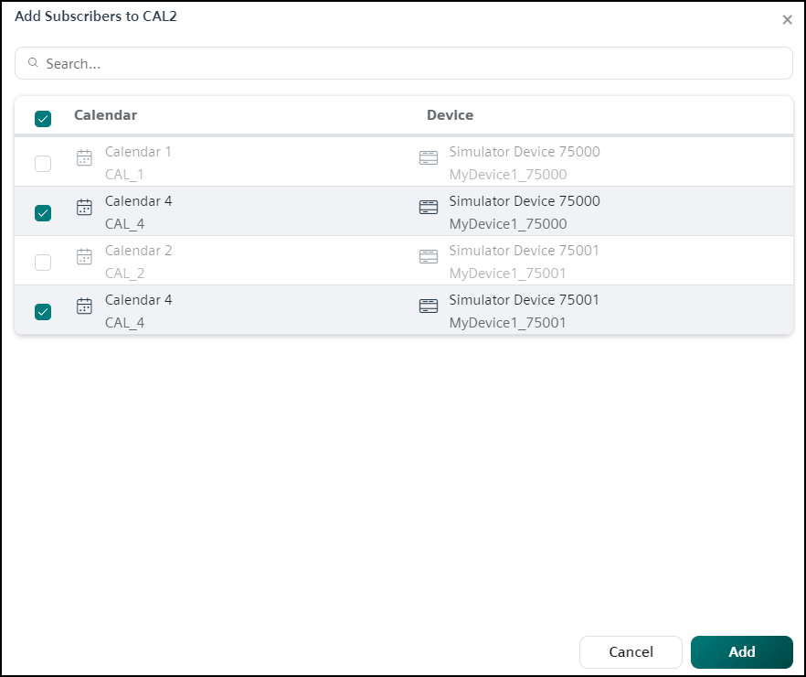
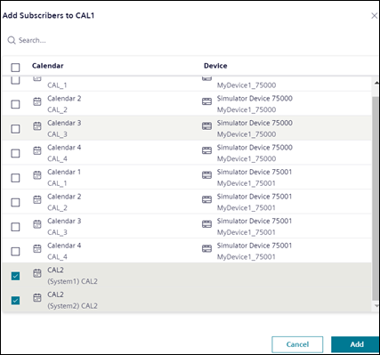

Creating a Management Station Calendar
You can create Management station calendars with entries and use these calendars as exceptions to the Management station scheduler.
Add Entries to Management Station Calendar
- Select Applications > Schedules > Management Station Calendars.
- The tile view displays existing Calendar objects.
- Click Add and select Management station calendar from the displayed options.
- Click Add and from the drop-down list select the type of calendar entry to be added. You can add entries of any of the types Date, Date range, Weekday or Recurring.
- Depending on the type of calendar entry selected, the corresponding fields display in the <new calendar entry> section.
- Specify the required values and click Save.
- The calendar is added with the entries. You can now associate the calendar as an exception to the Management station scheduler (See Add Scheduler Exceptions in Adding Scheduler Entries and Exceptions)
NOTE: You can also add calendar entries from the List view.
Add Subscribers to Management Station Calendar
You can add the following as a subscriber to the current Management station calendar:
- Remote calendar objects from different devices
- Management station calendars from partner systems in the distributed environment
- You must have Show and Configure access rights to view and configure the Subscribers in Management station calendar.
- Select Application > Schedules > Management Station Calendar > [calendar object].
- In Schedule tab, the calendar object displays in the Calendar view.
- Switch to the Subscribers tab.
- Click Add to add new subscribers.
- The Add Subscribers to [calendar object] dialog box displays.
- In the Add Subscribers to [calendar object] dialog box that displays, you can add either remote calendar objects from the devices or Management station calendars from the partner systems as subscribers.
NOTE: It is not possible to add subscribers when either Management station calendar or the selected calendar object is validated. - Perform the following steps to add a remote calendar object from the device as a subscriber to the current Management station calendars:
- Select the calendar entries to add a remote calendar object from the devices as a subscriber to the current Management station calendar object.
- In case of multiple entries are selected, confirm the selection, and click Add.
- The remote calendars are subscribed to the current Management station calendar object.
- Only one remote calendar object is subscribed per device. The following are cases where you cannot subscribe to the remote calendar object:
- If the remote calendar object is subscribed to other Management station calendar.
- If the remote calendar object is added to other devices. 
- Perform the following steps to add Management station calendars from the partner systems in a distributed environment as a subscriber to the current Management station calendar:
- Select the partner system Management station calendar entries to add them as a subscriber to the current Management station calendar object.
- If multiple entries are selected, confirm the selection and click Add.
- The selected partner system Management station calendars are subscribed to the current Management station calendar object.
- Only one Management station calendar is subscribed per partner system. The following are cases where you cannot subscribe to the Management station calendars from the partner system:
- If the Management station calendar from the partner system is added as a subscriber to any other Management station calendar.
- If the Management station calendar from partner systems are having any subscribers added to it.

Synchronize Subscribers in Management Station Calendar
You can synchronize subscribed remote calendar objects from the devices and Management station calendar from the partner systems.
- You must have Show and Configure access rights to view and configure the Subscribers in Management station calendar.
- Select Applications > Schedules > Management Station Calendar > [calendar object].
- In Schedule tab, the calendar object displays in Calendar view.
- Switch to the Subscribers tab.
- Ensure that the Subscribers is added to the calendar object. For more information, see Add Subscribers in Management Station Calendar in Creating a Management Station Calendar.
- Check the Sync status for newly added subscribers, as the synchronization starts automatically in the background once the calendars are subscribed.
- (Optional) Click Sync and start the synchronization of the calendar manually if the Sync status fails.
For remote calendars, synchronization fails in the following situations:
- When the device is disconnected.
- When an intentional update is needed for the remote calendars.
For Management station calendars of partner systems synchronization fails when the partner system is disconnected. - Check the Sync status column, the status displays the word Synced followed by the time stamp of the sync operations.
- Check if the old Subscribers entries are replaced with the new Subscribers entries.
- In the current Management station calendar object, all the Subscribers entries are Synced.
Remove Subscribers of Management Station Calendar
You can remove subscribed remote calendar objects from the devices and subscribed Management station calendar from the partner systems.
- You must have Show and Configure access rights to view and configure the Subscribers in Management station calendar.
- Select Applications > Schedules > Management Station Calendar > [calendar object].
- In Schedule tab, the calendar object displays in Calendar view.
- Switch to the Subscribers tab.
- From the list of subscribed calendars select the checkbox of the calendar you want to remove and do either of the following:
- Click and select Remove subscriber.
- Click Remove.
- The Remove subscriber dialog box displays.
- In the Remove subscriber dialog box confirm the removal of the subscribed calendar and click Remove.
- The subscribed calendar is removed from the list.